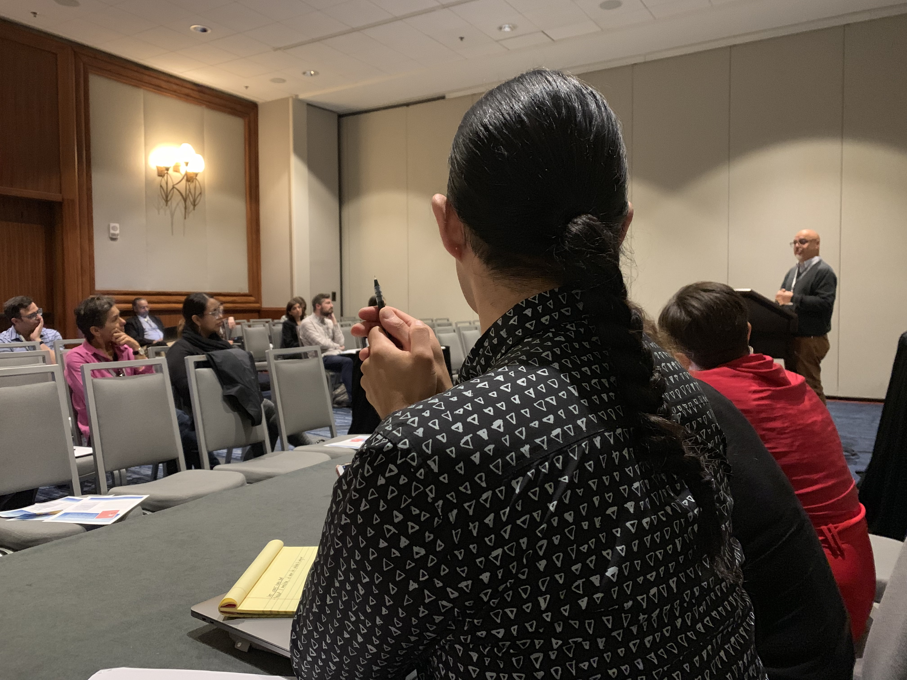
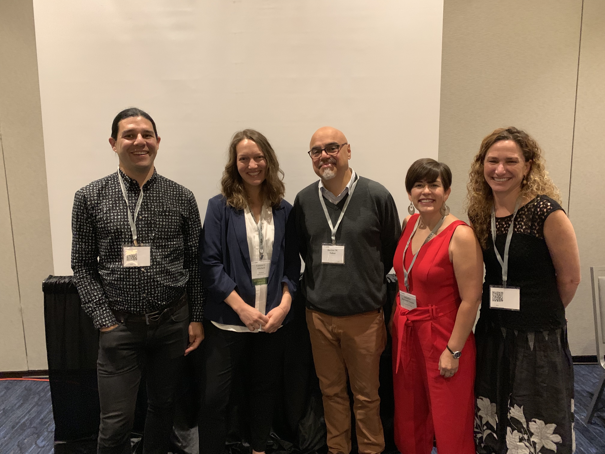

Más
Academic & Professional Affiliations
- Latin American Sound Studies Working Group, 2021-present
- Mexican Studies Research Collective, 2020-present
- Public Humanities Hub, UBC 2019-Present
- Green College Leading Scholars Program, 2019-2021
- Asociación Canadiense de Hispanistas (ACH), 2017-present
- American Comparative Literature Association (ACLA), 2016–present
- Latin American Studies Association (LASA), 2012–Present
Sections: Central America; Culture, Power and Politics; Latino Studies; Mexico - Modern Language Association (MLA), 2011–present
Links and Miscellany
- Research Spotlight, FHIS Newsletter, November 2019
- Editorial Associate for Chiricú Journal Issue 1.1 (Fall 2016)
- Profile on UBC’s French, Hispanic and Italian Studies website
- Some of my favorite pedagogy websites for basic language and cultural content: BK Nelson Spanish Language & Culture; University of Kansas Acceso Project
- Post on Through the Gates, IUB Provost’s Blog: Activism & Satire
- HOLA Bloomington Radio Interview: Ayotzinapa Awareness Event
 
LASA 2019 roundtable “Nuestra América through a Latinx Lens: Reading (with) Héctor Tobar.” Organized by Tamara Mitchell. Presentation: Héctor Tobar (University of California Irvine). Roundtable Discussants: Eric Vázquez (University of Iowa), Jennifer Harford Vargas (Bryn Mawr College), Marta Caminero-Santangelo (University of Kansas).